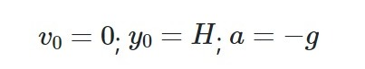

Caída Libre
De entre todos los movimientos rectilíneos uniformemente acelerados (m.r.u.a.) o movimientos rectilíneos uniformemente variados (m.r.u.v.) que se dan en la naturaleza, existen dos de particular interés: la caída libre y el lanzamiento vertical. En este apartado estudiaremos la caída libre. Ambos se rigen por las ecuaciones propias de los movimientos rectilíneos uniformemente acelerados (m.r.u.a.) o movimientos rectilíneos uniformemente variados (m.r.u.v.):
Caída Libre
En la caída libre un objeto cae verticalmente desde cierta altura H despreciando cualquier tipo de rozamiento con el aire o cualquier otro obstáculo. Se trata de un movimiento rectilíneo uniformemente acelerado (m.r.u.a.) o movimiento rectilíneo uniformemente variado (m.r.u.v.) en el que la aceleración coincide con el valor de la gravedad. En la superficie de la Tierra, la aceleración de la gravedad se puede considerar constante, dirigida hacia abajo, se designa por la letra g y su valor es de 9'8m/s2 (a veces se aproxima por 10 m/s2).
Para estudiar el movimiento de caída libre normalmente utilizaremos un sistema de referencia cuyo origen de coordenadas se encuentra en el pie de la vertical del punto desde el que soltamos el cuerpo y consideraremos el sentido positivo del eje y apuntando hacia arriba, tal y como puede verse en la figura:

Con todo esto nos quedaría:

La caída libre La caída libre es un movimiento rectilíneo uniformemente acelerado (m.r.u.a.) o movimiento rectilíneo uniformemente variado (m.r.u.v.) en el que se deja caer un cuerpo verticalmente desde cierta altura y no encuentra resistencia alguna en su camino. Las ecuaciones de la caída libre son:

Donde:
-
y: La posición final del cuerpo. Su unidad en el Sistema Internacional (S.I.) es el metro (m)
-
v: La velocidad final del cuerpo. Su unidad en el Sistema Internacional (S.I.) es el metro (m/s)
-
a: La aceleración del cuerpo durante el movimiento. Su unidad en el Sistema Internacional (S.I.) es el metro por segundo al cuadrado(m/s2).
-
t: Intervalo de tiempo durante el cual se produce el movimiento. Su unidad en el Sistema Internacional (S.I.) es el segundo (s)
-
H: La altura desde la que se deja caer el cuerpo. Se trata de una medida de longitud y por tanto se mide en metros.
-
g: El valor de la aceleración de la gravedad que, en la superficie terrestre puede considerarse igual a 9.8 m/s2
Si entiendes las fórmulas que hemos visto hasta ahora, puedes que te estés preguntando ¿Donde está la masa en estas formulas? El sentido común nos dice que un cuerpo pesado, por ejemplo, un martillo, debería caer a mayor velocidad que un cuerpo ligero, como por ejemplo una pluma. Sin embargo el sentido común no acierta en esa ocasión. El hecho es que si la pluma y el martillo estuvieran en el vacío, ambos caerían a igual velocidad. Cuando no están en el vacío y el aire se encuentra ofreciendo resistencia a estos cuerpos, su efecto es más evidente sobre la pluma, que llegará al suelo más tarde.
Si no estás convencido de lo que acabamos de deducir, observa el siguiente video en el que el astronauta David Scott, comandante de la misión Apolo 15 deja caer una pluma y un martillo en plena superficie lunar, donde no existe aire que ofrezca resistencia a estos cuerpos:
Ejemplo
Un vaso de agua situado al borde de una mesa cae hacia el suelo desde una altura de 1.5 m. Considerando que la gravedad es de 10 m/s2, calcular:
a) El tiempo que está el vaso en el aire.
b) La velocidad con la que impacta en el suelo.